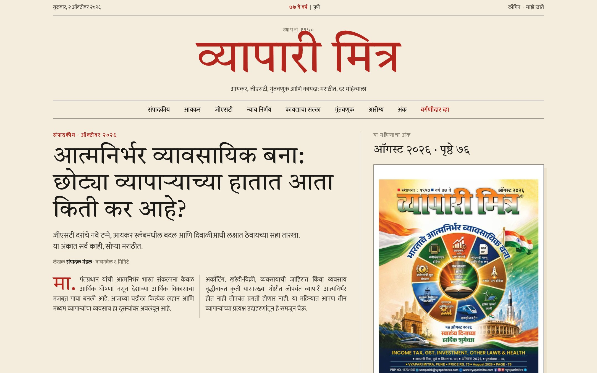
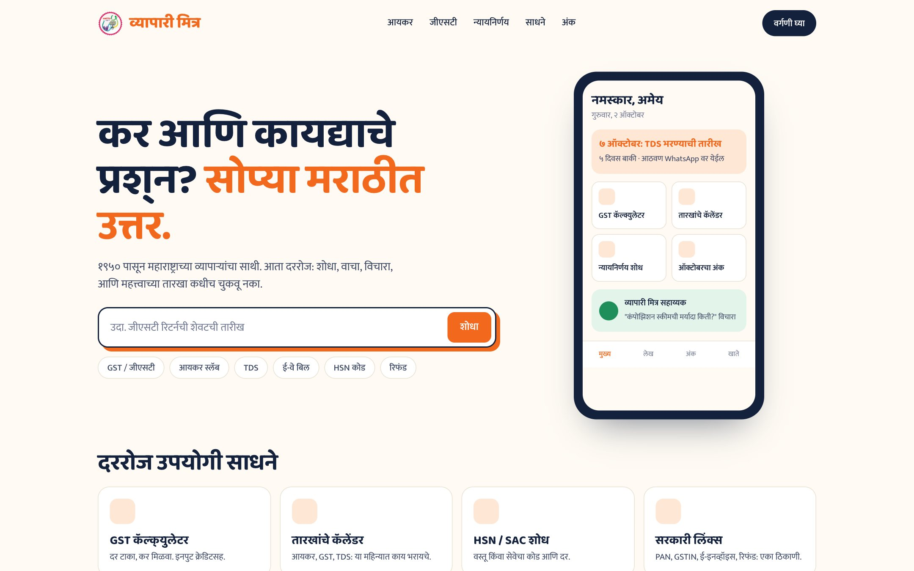
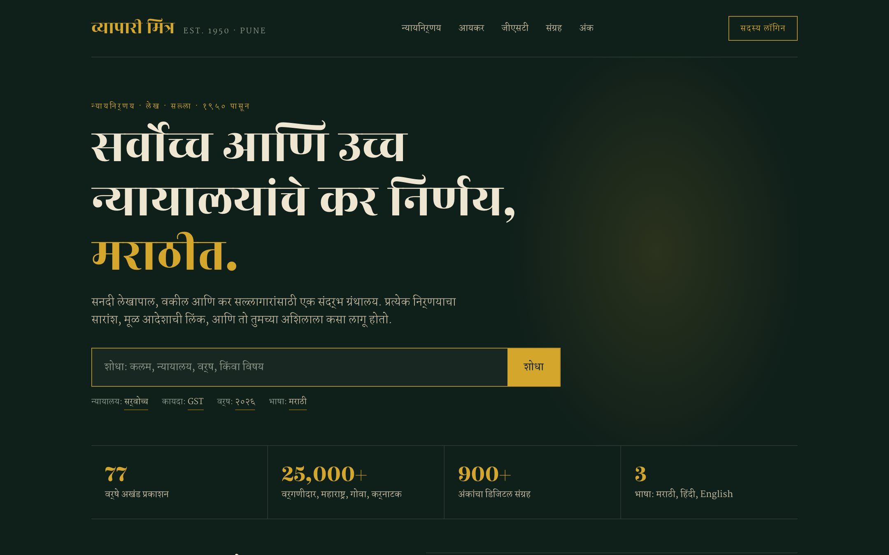
Seventy-six years in print. The next chapter is a platform.
A walkthrough of what we found, what we would build, the automation behind it, and three ways it could look.
What you asked for, in your own words.
Know who is visiting
Ask for name, mobile and email before a visitor reads. Say thank you, let them in.
Count them
How many people came today, how many since launch, and the collection total month by month.
See what they read
Which topic or page a visitor spends the most time on.
Run it yourself
Upload articles and issues without calling a developer.
A strong magazine inside a tired website.
- Since 1950, 25,000+ subscribersMaharashtra, Goa, parts of Karnataka. The content is the asset.
- WordPress with a page builder and a shop pluginEvery article is a hand-built page. Four add-on plugins just for layout.
- Thirty menu entries, listed twiceThe same navigation is rendered two times on every page.
- Fourteen "Read more" links on the home pageNone of them say what the reader will get.
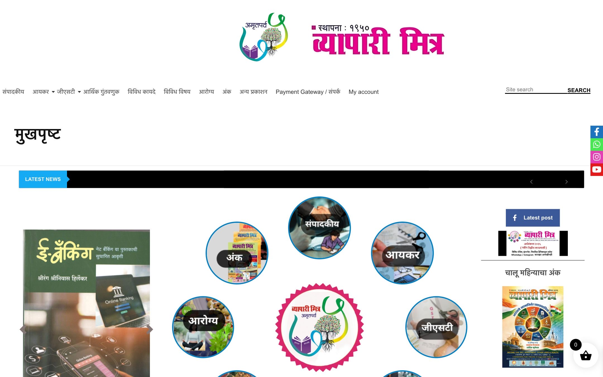
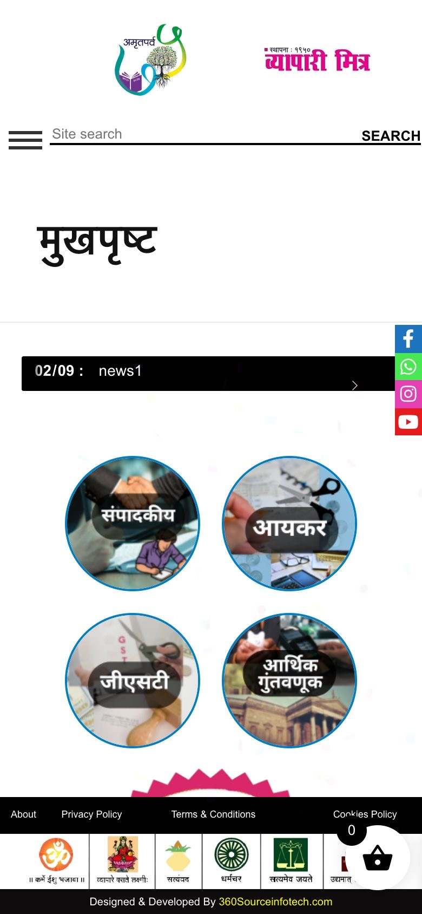
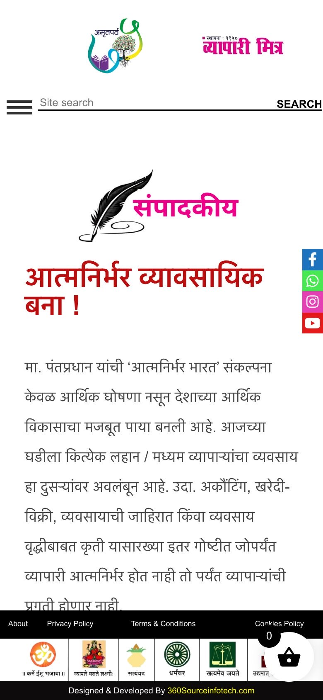
The first screen sells nothing.
- No article, no subscribe button above the foldA reader has to scroll past a search bar and a page title.
- A ticker that reads "news1"Placeholder content is live on the home page.
- Forty tap targets smaller than a fingertipCounted on the home page alone.
- Sticky bars cover the articleFooter plus social bar on every page, on every scroll.
Paying is possible. Being a member is not.
- A username-and-password formNo Google, no Facebook, no mobile OTP.
- Subscription sold like a product with postageNothing happens after payment: no access, no issue, no reminder.
- No member areaA subscriber cannot see their plan, renew, or read online.
- Renewals chased by handWith 25,000 subscribers, that is a full-time job.
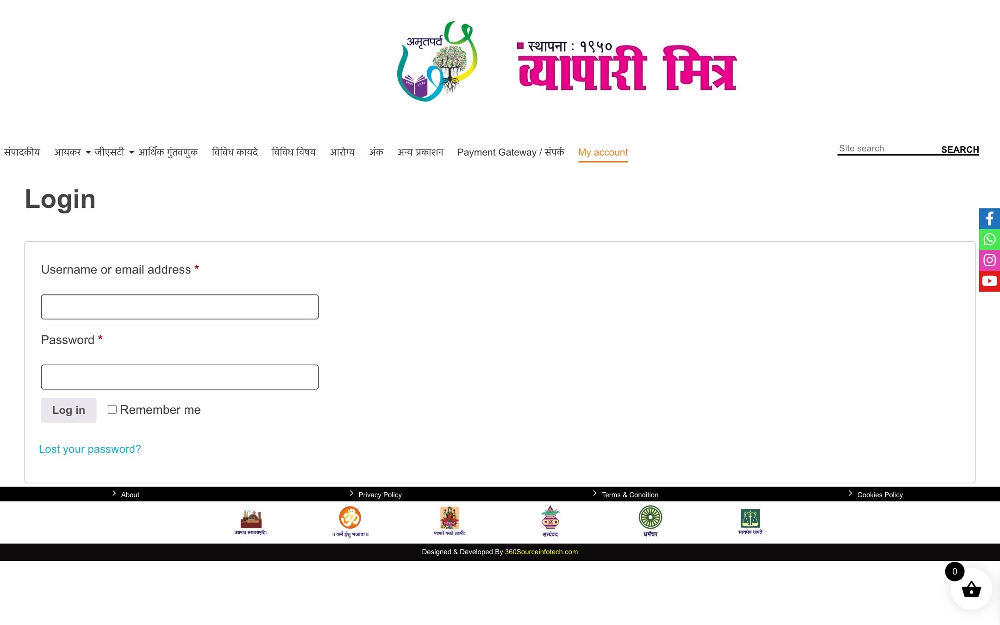
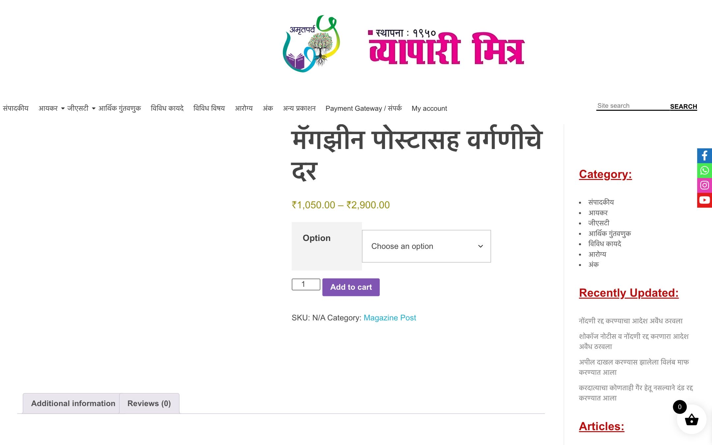
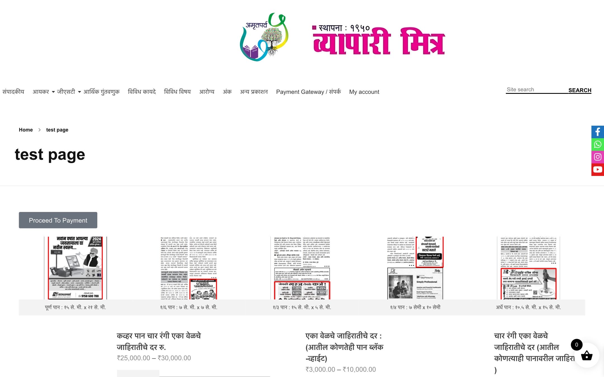
Nine test pages are public and indexed.
- /test-page, /test-data-page, /form-test
- /demo, /demo1, /h
- /home-3, /homenew-oldOld home pages still live.
- /job-openingsA recruitment plugin, installed and empty.
Every article is a hand-built page. That is why nothing scales.
Each issue means designing pages again. Search, categories and the magazine cannot see what is inside them.
Articles, judgments, advice, issues and books become structured records. One template each. Thousands of items, one way of working.
The August audit scored it five out of ten. We agree.
Not a website. A subscriber engine.
Discover
A reader finds an article on Google or WhatsApp.
Register
Name, mobile, email. One tap with Google.
Read
Free articles, then a clear line where membership starts.
Subscribe
Pick a plan, pay by UPI or card.
Activate
Access opens the same minute. Receipt on WhatsApp.
Remind
New issue, expiry, renewal: automatic.
Renew
One tap, no form, no phone call.
Who came, what they read, what they paid.
- Soft gate after the first articleName, mobile, email, or Google in one tap. Thank you, and in.
- Visitors today and since launchLive, on your phone, no spreadsheets.
- Collections, month by monthSubscriptions, single issues, books, ad bookings.
- Time on topicGST or income tax: which section keeps readers longest.
Every lead gets a WhatsApp conversation, automatically.
Welcome message in Marathi, with this month's free article and a link to the current issue.
A short note from the editor with a first-year offer code.
Receipt, login link, and "your issue is ready to read".
Cover image, three headlines, "read now" button, to every active subscriber.
Reminder at 30, 7 and 1 day, each with a one-tap renew link.
The assistant answers from the archive, or hands over to your team with the full context.
Answers in Marathi, from your own archive.
- Trained only on Vyapari Mitra contentArticles, judgments, advice columns. It cites the source every time.
- Knows who it is talking toSubscriber or visitor, expiry date, what they read last.
- Sells politelyIf the full answer is members-only, it says so and offers the plan.
- Hands over when it shouldLegal questions beyond the archive go to your team with the chat attached.
Offers that know who they are talking to.
First-year welcome
A code shown once at the gate, valid for seven days. Creates urgency without a sale banner on the home page.
Come-back price
For anyone whose subscription ended in the last two years. Sent on WhatsApp, not advertised publicly.
Chamber and firm plans
Five or more seats for CA firms, tax consultants and chambers, with one GST invoice.
Early-bird renewal
Renew thirty days before expiry and keep last year's price. Most renewals should land here.
एक मिनिट, एकदाच. त्यानंतर मोफत लेख आणि साप्ताहिक पत्र.
One screen. Three ways in. Never a lost password.
- Google and Facebook, one tapNo password to remember. Name and email arrive verified.
- Mobile OTP for everyone elseMany readers live on WhatsApp, not email. The number is the identity.
- Newsletter consent built inA weekly summary by email and WhatsApp; opt out any time.
- Same login on the website and the magazine readerOne account, every device.
The magazine, on screen, by your rules.
Read online only
Page-by-page reader on phone and desktop. No download, no print, watermarked with the subscriber's name.
Download unlocks
The PDF appears in the member area automatically. No request, no email to your office.
The archive
Previous issues, searchable by month, topic and author. The 1950 to 2026 collection becomes a reason to subscribe.
Publish an article in two minutes, without a developer.
- One screen for everythingArticles, judgments, advice columns, issues, books, announcements.
- Marathi, Hindi and English fields side by sideTranslate when you are ready; the site shows what exists.
- Free or members-only, per itemA switch, not a separate page.
- Scheduled publishingLoad the issue on Sunday, it goes live on the first.
Twelve jobs the AI does every day, a person approves.
Digitise the issue
Drop the print PDF; it becomes tagged articles, judgments and columns in the CMS, in Marathi.
Judgment summaries
An English court order becomes a three-part Marathi summary: what happened, what was ruled, what it means.
Hindi and English drafts
Every Marathi article gets translated drafts for the editor to approve, when you decide to expand.
What changed this week
Watches CBDT and CBIC notifications and circulars, drafts the weekly update for the editor.
Assistant on web and WhatsApp
Answers from the archive in Marathi, cites the article, offers the subscription.
Reader questions, triaged
Questions for the advice column arrive sorted by topic with a drafted answer for the expert to edit.
Due-date reminders
GST, TDS and income tax dates sent to each subscriber by their profile: trader, professional, firm.
Weekly newsletter
Assembled from the week's articles, in the reader's language, sent by email and WhatsApp.
Renewals and receipts
Reminders, payment, GST invoice and access, with nobody in the office touching it.
Ad bookings
An advertiser enquiry gets the rate card, a quote and a proof deadline, automatically.
Delivery and address changes
Subscribers update their postal address or report a missed issue on WhatsApp; the list updates itself.
Monday report
Visitors, top topics, renewals due, lapsed subscribers and collections, on your phone before you ask.
One issue, from the press to every subscriber, in an hour.
Drop the PDF
The same file that goes to the printer. Nothing else to prepare.
1 minuteSplit and tag
Articles, judgments, advice, editorial. Author, category, section, page references.
10 minutesSummaries and search
A two-line summary per piece, keywords in Marathi and English, search index updated.
5 minutesReview and approve
Reads the list, fixes a heading or two, decides what is free and what is members-only.
30 minutesPublish everywhere
Website, magazine reader, WhatsApp new-issue alert, newsletter, social captions.
5 minutesLearn
Which pieces were read, which drove renewals. Feeds next month's Monday report.
ongoingThree directions. One is you.
Designed for a Marathi reader first. Devanagari typefaces that shape Marathi conjuncts correctly, your logo, your August cover. Each one is a different answer to "what is Vyapari Mitra online?"
A. Vartapatra
The heritage broadsheet. Trust, authority, seventy-six years.
B. Saathi
The daily companion. Tools, dates, answers, a friend in your pocket.
C. Nyaya
The reference library. For the professional who pays for precision.
Vartapatra. The paper you trust, now on your phone.
Heritage and authority. Reads like a well-set Marathi broadsheet: editorial leads, the issue sits at the newsstand, judgments below the fold.
- For whomThe long-time subscriber and the business owner who values the name.
- What it saysSeventy-six years of trust, finally readable on a phone.
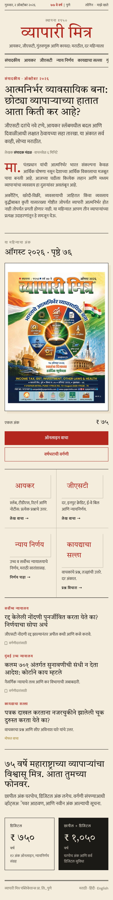
Saathi. The friend who knows the tax rules.
Everyday utility. Search first, due dates, calculators and the assistant up front. The magazine is the reward for coming back.
- For whomShopkeepers, traders and first-time taxpayers, mostly on a phone.
- What it saysAsk anything about tax, in Marathi, right now.
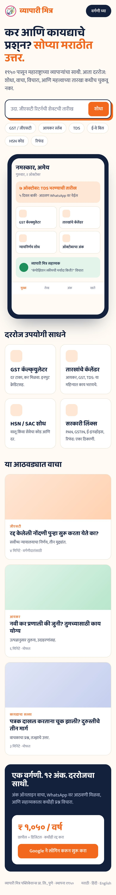
Nyaya. The reference library for professionals.
Precision and prestige. Judgments search with facets, the 1950 to 2026 archive as a timeline, and a membership card that reads like a credential.
- For whomChartered accountants, advocates, tax consultants and their firms.
- What it saysThe most complete Marathi tax reference there is.
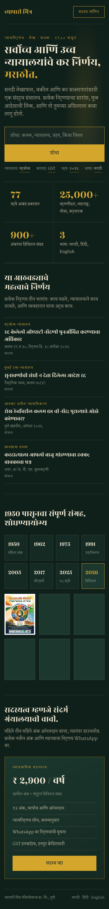
Marathi today. Hindi and English without rebuilding.
Built in from day one
Every article, issue and menu has three language slots. Publish Marathi now, add the others when the editorial team is ready.
Search that understands your readers
GST, जीएसटी, "jeeesti", TDS, कर, 2026: one search box, partial words, categories, dates, authors and specific judgments.
Fast on a cheap phone
No page builder, no plugin pile. Each page loads in under two seconds on a 4G connection, measured on real devices.
Pick a direction. Weeks, not months.
Choose
You pick A, B or C, or a mix. We lock the look in one working session.
Design
Home, article, issue, account and gate, designed on your real content.
Build
Structured content, membership, payments, WhatsApp, automation, dashboard. Weekly walkthrough.
Move
Every article, issue and subscriber migrated. Old links keep working.
Launch
Same domain, same morning. Your team trained the day before.
Run
Updates, backups, security, reminders and a monthly report, handled by us.
Which direction feels like you?
Tell us A, B or C. We come back with the detailed scope, the plan and the commercials for that direction.